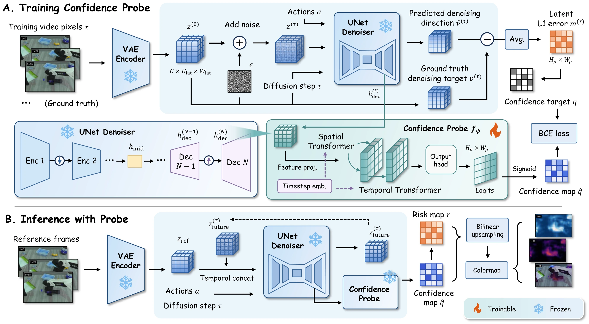
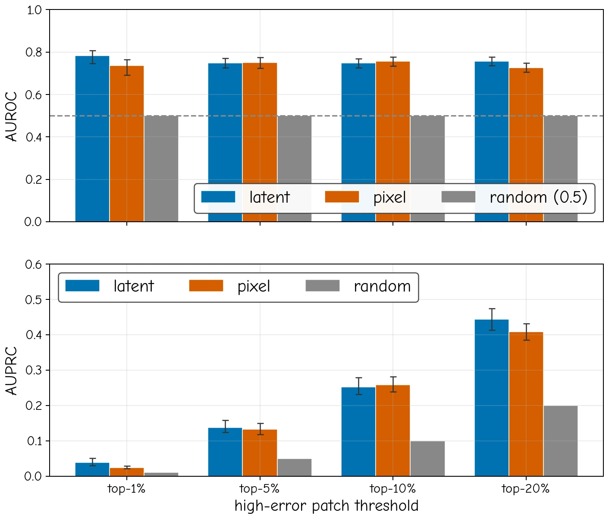
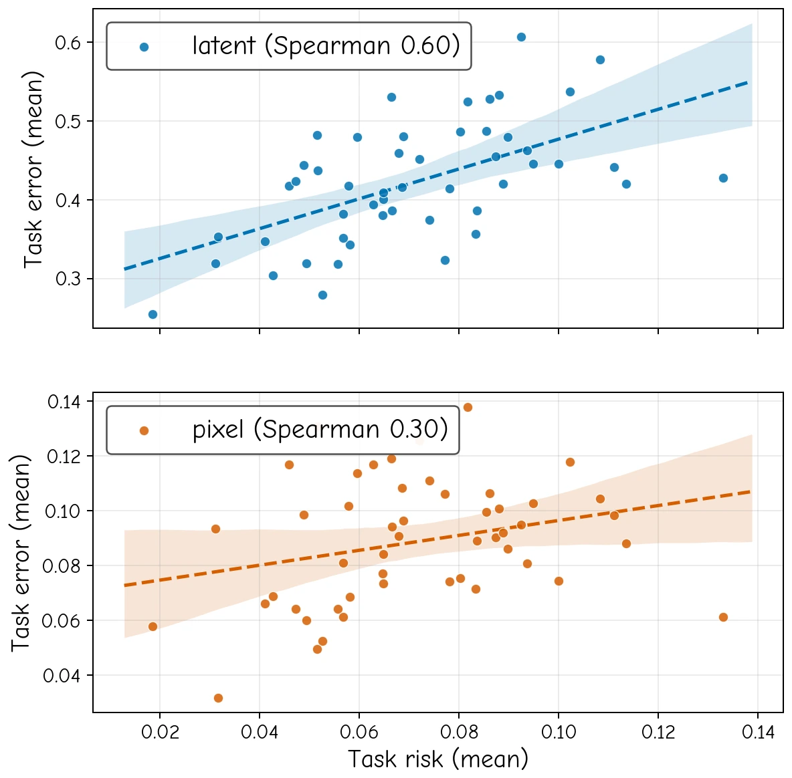
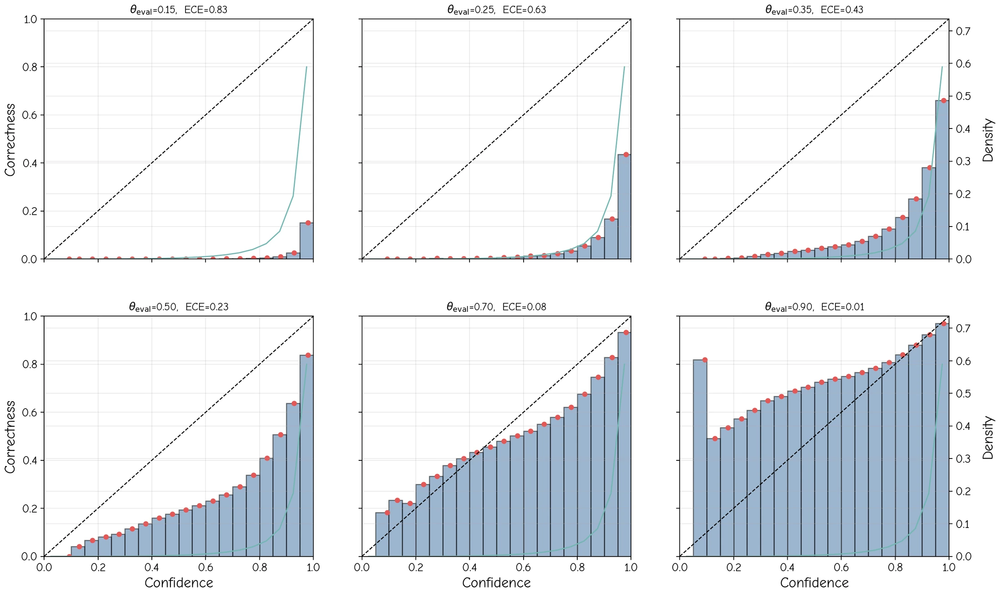
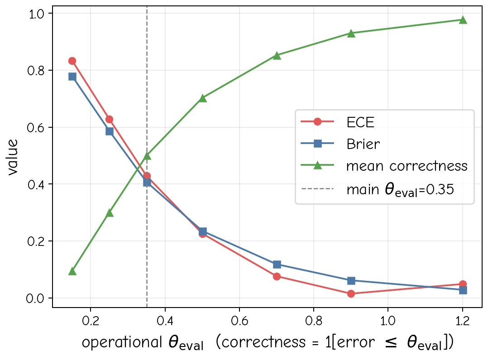
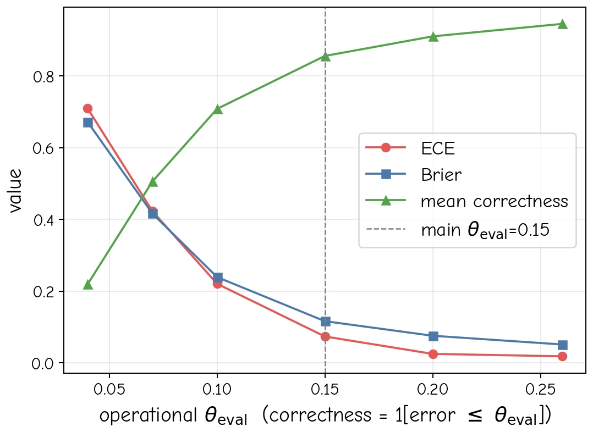
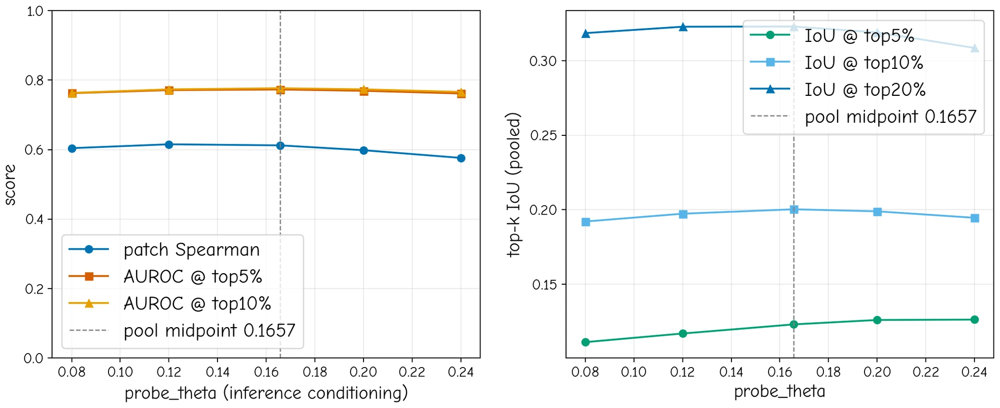
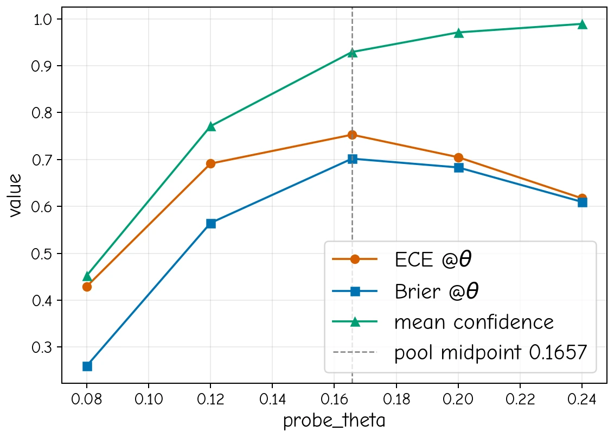
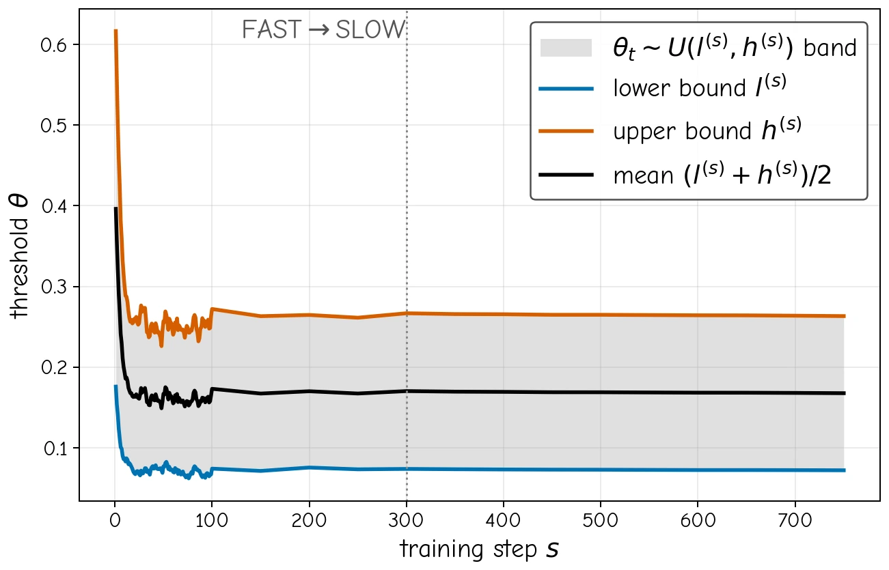
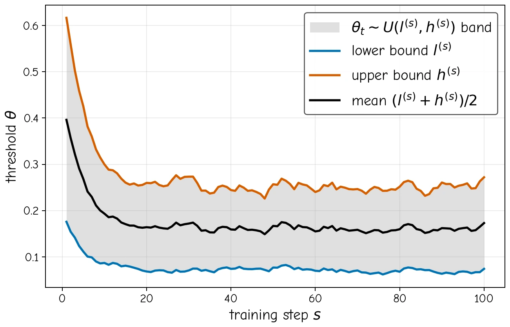

Decoder-feature confidence probe with an EMA-calibrated training target for dense latent-space reliability estimation.
01 · Overview
Confidence closes the loop.
Estimate where the world model is unreliable, spend the post-training budget there, then strengthen supervision on the difficult frames and patches.
Mean risk becomes an acquisition signal for staged, budget-aware active post-training on new task and scene distributions.
Frame-and-patch confidence weighting focuses training on unreliable spatiotemporal regions instead of treating every target equally.
Confidence improves selection and weighted retraining over scalar reward, progress, preference, and judge-based scoring baselines.
02 · Method
Dense confidence, from UNet features to retraining.
One lightweight probe serves two downstream roles: data acquisition and localized data enhancement.

Decoder-feature probe
Tap selectable UNet decoder features: enough spatial locality for patch-wise confidence, while retaining global context.
EMA-calibrated target
Local latent denoising error is converted into binary confidence supervision using a stable adaptive threshold band.
Mean-risk acquisition
Dense risk maps are aggregated across future frames and spatial patches to prioritize informative tasks and scenes.
Frame + patch weighting
The same dense confidence output becomes a training weight, emphasizing difficult frames and local regions during EVAC-v2 retraining.
03 · Confidence Visualization
Where does the model fail?
50 tasks are organized into 10 groups. Each group shows five tasks × six synchronized video views. Toggle between pixel space (GT / predicted frames) and latent space (latent magnitudes) for the first, second, and last columns.
Group 1 / 10 · Tasks 1–5
04 · Active Learning Results
Post-training numerical results.
Switch between the main bar-chart comparison and three table views. The seed selector updates the same result space.
05 · Qualitative Evolution
Base EVAC → v1 → confidence-guided v2.
Each episode pairs five synchronized videos with a compact metric table. Ten episodes across four pages; the first six match the paper.
Group 1 / 4 · Episodes 1–3 of 10
06 · Why Confidence?
Compact confidence diagnostics.
A small subset of the paper and appendix diagnostics: ranking, detection, calibration, and sensitivity.
Patch / Frame / Task Spearman 0.540 / 0.590 / 0.595Top-5% patch AUROC 0.761Adjacent-frame top-region IoU 0.740Risk flicker 0.005Peak temporal correlation 0.602









07 · Models & Data
Everything needed to reproduce the loop.
Model weights, confidence probes, trajectory detector, prescreen outputs, v2 scoring artifacts, and YOLO annotations.
Models
Planned public checkpoints.
EVAC · Warmup v1RoboTwin2.0 domain-adapted warmup
🤗 TODOEVAC-v2 · Weighting NoneMean-risk selection-only checkpoint
🤗 TODOEVAC-v2 · FrameConfidence-guided frame weighting
🤗 TODOEVAC-v2 · Frame + PatchDense confidence-guided enhancement
🤗 TODOConfidence Probe · RoboTwin2.0Main probe used in the paper
🤗 TODOConfidence Probe · AgiBot WorldAdditional confidence checkpoint
🤗 TODOYOLO · RoboTwin2.0Trajectory-metric detector for EWMBench-style evaluation
🤗 TODOData & Evaluation Artifacts
Precomputed outputs that avoid expensive repeated inference.
50-task prescreen packageEVAC-v1 inference, confidence scores, risk maps, and JSON metadata
🤗 TODOEVAC-v2 training · inference + JSONPrecomputed v1 inference outputs + episode metadata
🤗 TODOEVAC-v2 training · dense confidence + JSONDense confidence/risk outputs and scoring metadata for confidence-guided retraining
🤗 TODOBaseline selection · v1 inference resultsEVAC-v1 inference outputs for tasks/scenes selected by the other acquisition baselines
🤗 TODOBaseline weighting · v2 frame-scoring dataFrame-level scoring artifacts used by the additional-weighting baseline experiments
🤗 TODOYOLO RoboTwin2.0 annotationsRobot-arm trajectory labels estimated from RoboTwin2.0 action conditions
🤗 TODOEvaluation tables & bootstrap JSONMean / seed-wise metrics and pooled paired-bootstrap statistics
🤗 TODO08 · Citation
Cite ConfAL-WM.
The copy button writes the BibTeX block directly to the clipboard.
@article{confalwm2026,
title = {ConfAL-WM: Confidence-Guided Active Learning for Action-Conditioned World Models},
author = {Anonymous Authors},
journal = {arXiv preprint},
year = {2026},
url = {https://ConfAL-WM.github.io}
}
% TODO: replace author / arXiv identifier / venue when public.